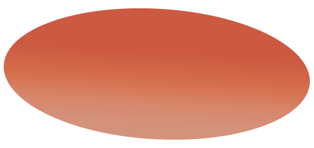
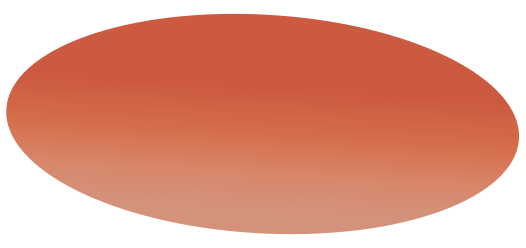

Турпоход в горы
Как гласит старая туристическая мудрость,Старт!
вещи нужно начинать паковать за неделю до
старта, а разбирать — сразу после возвращения.
Жизнь доказала, что мы всё делаем наоборот.
 

Как гласит старая туристическая мудрость,Старт!
вещи нужно начинать паковать за неделю до
старта, а разбирать — сразу после возвращения.
Жизнь доказала, что мы всё делаем наоборот.